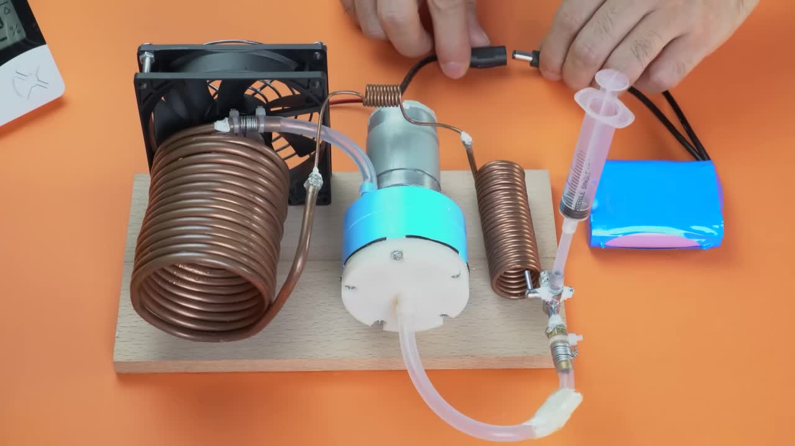
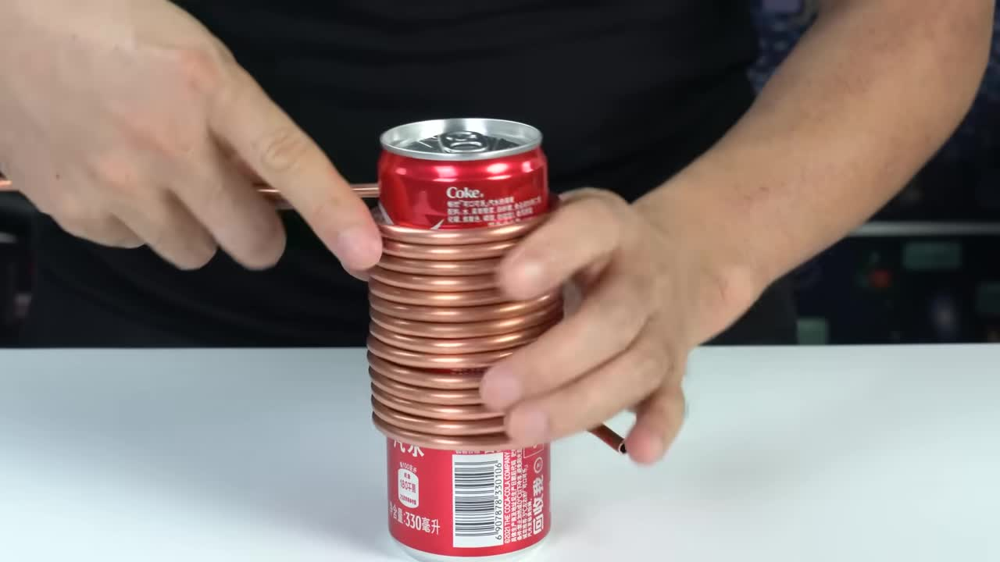
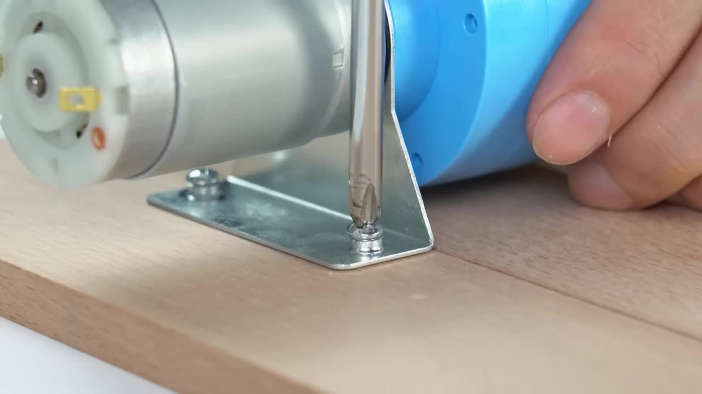
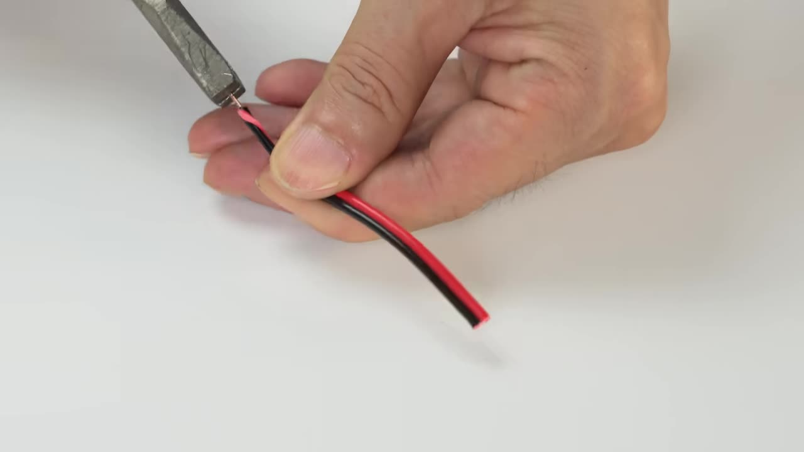
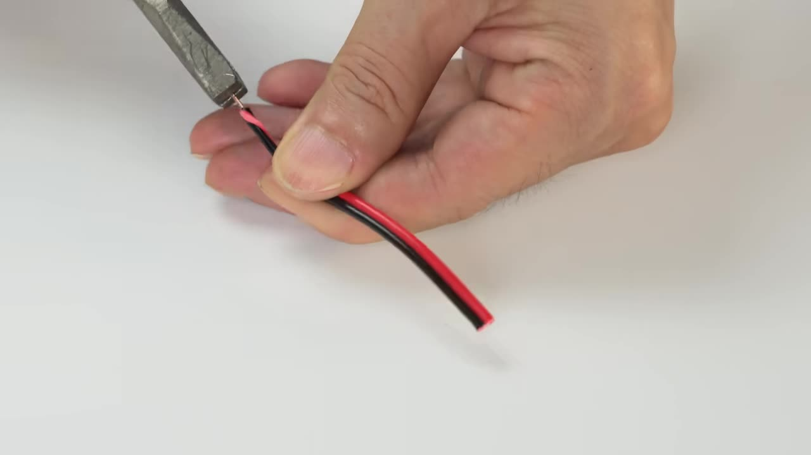

極致降溫 DIY
Mini Refrigeration System Project Tutorial
这个教程将引导您使用常见的电子和五金材料，亲手打造一个简易的迷你蒸汽压缩制冷系统。通过这个项目，您不仅能看到铜管表面瞬间结霜的奇妙现象，更能深入理解制冷循环的基础原理。
项目特点 Project Highlights
- 快速制冷效果: 在蒸发器盘管表面实现明显的低至冰点以下的温度。
- 材料易获取: 项目所需的核心组件相对容易获得。
- 亲手实践: 适合电子或物理爱好者，通过动手加深理解。
- 原理可视化: 清晰展示了蒸汽压缩制冷循环的基本工作流程。
所需材料与组件 Materials & Components

直流气泵 (Compressor)
用于循环制冷剂，提供系统所需的压力。
参考规格 (如图所示): 12V, 压力 20-23PSI (高压侧) / -50-60KPA (低压侧)

大型铜管盘管 (Evaporator)
作为蒸发器，制冷剂在此吸收热量从液体变为气体，产生低温。
参考规格 (外径 OD): 6.2 mm (制作方法见步骤 1)

小型铜管盘管 (Condenser)
作为冷凝器，制冷剂在此释放热量从气体变为液体。
参考规格 (外径 OD): 约 2.9 mm (制作方法见步骤 1)
细铜管 (Capillary Tube)
作为节流膨胀装置，通过阻力降低制冷剂的压力和温度。
直流风扇
用于加速冷凝器或蒸发器的热交换效率。

阀门组件
用于制冷剂的加注和系统控制。

软管与注射器
Tubing & Syringe
软管参考规格: 内径 ID 约 3.7 mm / 外径 OD 约 6.5 mm。注射器用于制冷剂加注。
木板
用于制作装置的底座。
焊锡工具和焊锡
用于连接铜管。
螺丝及螺丝刀
用于固定组件。
钳子、扎带、金属丝
用于辅助固定和密封管路。
密封胶
用于增强管路连接处的密封性。
电源
直流电源适配器或电池组，为气泵和风扇供电。
制冷剂
蓝色液体，用于在系统中循环实现制冷。
制作步骤详解 Detailed Build Steps
步骤 1：准备铜管

测量较粗铜管的外径，确保为 6.2 mm。将它缠绕在直径合适的圆柱体（如汽水罐）上，制作成蒸发器盘管。
取一段较细的铜管（外径约 2.9 mm），弯曲并截取所需长度，这将用作毛细管和冷凝器盘管。
步骤 2：处理毛细管与接头
将细铜管的一端使用小刀或锉刀细心打磨至尖锐，以便后续插入。

清理毛细管内部和外部的雜質。
准备阀门组件和一个黄铜软管接头。如果接头过长，可能需要锯掉一端并打磨。
步骤 3：焊接铜管连接
将打磨尖锐的细铜管插入大型盘管（蒸发器）的出气口，使用焊锡牢固焊接连接。

将小型盘管（冷凝器）的一端焊接到阀门组件的输入端。
将黄铜软管接头焊接到阀门的另一个接口上。
步骤 4：制作底座并固定气泵
切割木板并粘合或固定，形成一个稳定的底座。
使用提供的金属支架和螺丝，将直流气泵牢固地固定在木板底座上。
步骤 5：连接管路形成循环
使用软管连接气泵的排气口 (OUT/+ ) 到大型盘管（蒸发器）的铜管入口。

将连接了细铜管的大型盘管（蒸发器）出口，通过细铜管连接到小型盘管（冷凝器）的入口（已焊接在阀门上）。

将小型盘管（冷凝器）的出气端通过软管连接到阀门。
将阀门上连接了黄铜接头的端口，通过软管连接回气泵的进气口 (IN/-)，形成一个完整的密闭循环管路。

使用扎带或细金属丝加固所有软管与接头之间的连接，确保管路系统的气密性，避免制冷剂泄漏。

步骤 6：安装风扇
将直流风扇固定在底座上，调整方向使其空气流向大型盘管（蒸发器）。

将风扇的电源线与气泵的电源线并联连接到同一个电源接口，以便它们同时工作。

步骤 7：加注制冷剂与测试
通过阀门组件上的加注口，使用注射器将少量蓝色制冷剂液体缓慢注入到系统中。注意不要过量。
连接直流电源适配器或电池组到气泵和风扇的电源接口，启动整个系统。
观察大型盘管（蒸发器）的表面。如果一切连接正確且制冷劑適量，盤管應開始迅速降溫，並在表面形成霜層。
额外步骤 (可能用于改进或密封)
教程中还展示了从打火机中取出火石机构 (06:10)，剥开电线 (06:28)，以及使用白色密封胶对部分管路连接处进行密封 (07:12)。这些步骤可能用于提高系统的气密性或作为其他辅助功能，但不是实现基本制冷循环的必需核心步骤。
 

令人惊叹的制冷效果！
系统启动后，您可以亲眼看到大型铜管盘管（蒸发器）表面如何迅速降温，空气中的水蒸气凝结并在其表面形成漂亮的霜层。在室温约 25.5°C、湿度 63.1% 的环境中，结霜效果非常明显。

这证明了我们自制的迷你蒸汽压缩制冷系统能够有效运行，达到制冷效果。
(Placeholder for Temperature Chart)